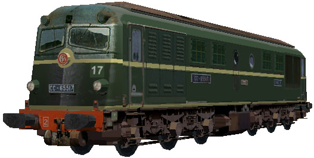
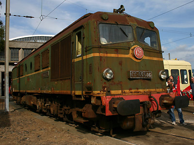
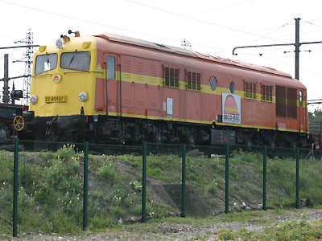
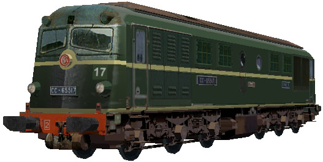

La CC 65500 version 
Pierre Gauriat a réalisé la CC 65517 pour MSTS. Des machines repeintes en livrées de sociétés de travaux sont aussi disponibles.

Ferrovia - 30 Octobre 2012
060 DA - CC 64000 - 65500
Les Dakota
Machines Diesel-électriques de puissance moyenne construites à 35 exemplaires de 1955 à 1959. Rebaptisées CC 64000 en 1962 puis CC 65500 en raison de la fabrication à plus de 500 exemplaires des BB 63500, débordant sur la tranche suivante de numérotation.
Le son caractéristique de leur moteur lent leur a valu le surnom de "Dakota".
Elles étaient utilisées sur la grande ceinture parisienne au dépôt de la Plaine. Les premiers engins radiés au début des années 1980 furent vendus à des sociétés de travaux. Une bonne moitié de l'effectif a connu une seconde carrière en posant du ballast sur les chantiers de ligne à grande vitesse. Les dernières ont participé à la construction de la LGV Méditerranée et furent radiées en 2005.
La CC 65506 est préservée dans la réserve de Mohon pour la Cité du Train.
Pour plus d'info :
les CC 65500 sur Wikipédia
l'inventaire des CC 65500 sur Trains du Sud-Ouest

La CC 65506 préservée dans la collection de Mohon, à Chalindrey (22/09/2007)

La CC 65507 Seco-Rail (10/09/2006)
La CC 65500 version 
Pierre Gauriat a réalisé la CC 65517 pour MSTS. Des machines repeintes en livrées de sociétés de travaux sont aussi disponibles.
